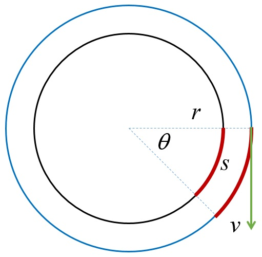
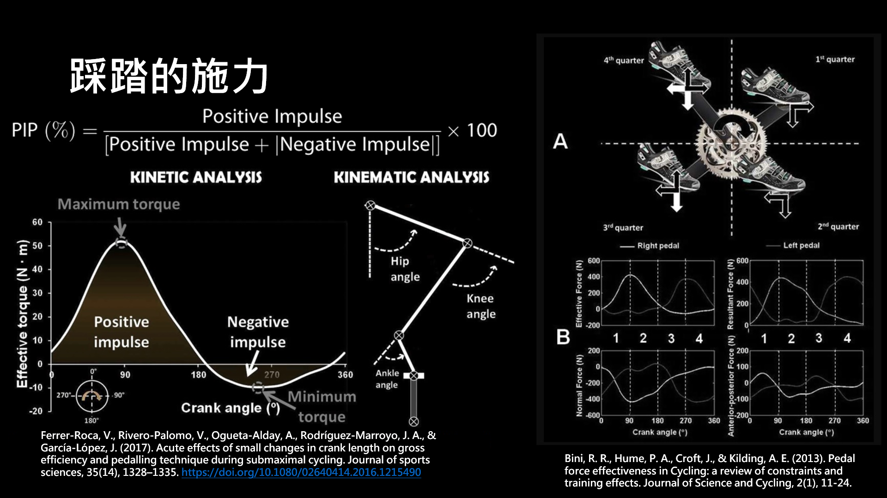

改變曲柄長度會如何影響騎乘
一、曲柄長度與齒比
單車主要就兩種簡單機械，輪軸與齒輪。齒輪只會改變受力方向，不改變受力大小，例如大盤跟飛輪就是此種關係。輪軸則是槓桿的變形，例如大盤與曲柄，和飛輪與輪子，所以可以用力矩方程式來計算。首先先來看曲柄長度與齒比的關係，這邊我們就把各器材的受力與半徑分配符號如表一
| 人施力 F1 | 輪子受力 F2 | 大盤受力 f | 飛輪受力 f |
|---|---|---|---|
| 曲柄長 R1 | 輪子半徑 R2 | 大盤半徑 r1 | 飛輪半徑 r2 |
表一：個符號代表意義
所以可以列出力矩方程式
大盤曲柄：F1R1 = fr1
輪子飛輪：F2R2 = fr2
所以可以得到
F1R1 = F2R2r1 / r2，正比於 r1 / r2
所以當縮短曲柄長度時，若是輪子要維持相同的受力，那要嘛就是增加施力，不然就是降低齒比，也就是用較小的大盤或用較大的飛輪。不過如果換的長度沒有很多的話是很難感覺得出差異的。
二、踩踏的物理
再來用力學分析來看踩踏是否會改變瓦數。我們都知道做功就是施力乘上平行於施力點的位移，經過數學運算可得到
W = F•s = F•q x r = r x F•q = J•q
| 做功 W | 施力 F | 位移 s | 功率 P |
|---|---|---|---|
| 曲柄長 r | 力矩 J | 角度 q | 角速度 w |
P = dW/dt = F•v = J•w
|  |
|---|
| 圖一：踩踏圓周 |
而功率為單位時間內的做功，所以可寫成力矩與角速度做內積。對於同一個人來說，假設短時間內去換曲柄，則施力可以看做定值，所以曲柄越長，力矩就會越大。但是也因為曲柄變成，所以轉動相同角度的距離也會增加如右圖所示，所以增加曲柄長度就會降低角速度，這樣子一來一回半徑的影響就消掉了，所以改變曲柄長度並不會影響輸出的瓦數這也說明了能量並不會憑空增加，人體能輸出多少能量，傳到踏板上的能量最多就那些而已。不過如果用一些特別常或特別短的曲柄則會影響騎乘姿勢進而影響瓦數。但是如果功率計是測量施力，那當改變曲柄長度時，記得要去碼表裡面改曲柄長度，才不會讓計算值出錯。
 |
|---|
| 註冊並訂閱網站使用表現預估功能 |
三、踩踏的施力
接下來看踩踏時每個位置的力矩，在整個踩踏的過程可以大致分成四個象限，一四象限的重力與施力方向都是向下，而二三象限則是重力向下，施力方向則看人而有所不同，但在二三象限部分應該多數人會測到負的力矩。
|  |
|---|
| 圖二：踩踏力圖[1][2] |
在此定上死點為0度，下死點為180度，那麼就可以畫出如左圖的在每個角度曲柄所受的力矩。所以我們就可以定一個正衝量百分比PIP的量，定義就是正功的值加上負功的值分之正功，注意到負功只加上數值，所以在算是中取了絕對值，也就是在一整圈的踩踏中作正功的比例。經過一些計算就可以知道，當曲柄長度縮短，|NI| 和 PI 都減小，所以 PIP 會增加，而 TE 會減小，實驗結果可參考 [1]。
四、曲柄長度與心律和總效率
然後再來看在更換曲柄長度並輸出相同的瓦數，心律和能量消耗會有什麼改變。在此的能量消耗例測量每一秒的VO2及VCO2來推算，如右下圖所示，而作功就是在固定時間內的功率總和。所以可以看到實驗結果顯示，相同瓦數下用相同的踏頻，並不會影響能量消耗與心律，但是增加瓦數就會改變能量消耗與心律，所以由此可知，些微的改變曲柄長度並不會影響騎乘，實驗結果可參考 [1]。
四、曲柄長度與騎乘姿勢
最後就是一些身體的角度，這也是fitter在強調的事。所以些微的改變曲柄長度主要是影響騎乘的姿勢，所以像計時車或三鐵車因為姿勢比較趴，通常會用較短的曲柄。而瓦數與相同瓦數下的心律是反應出個人的能力，改變曲柄長度並不會改變個人的能力。
所以這邊從力學計算來分析改變曲柄不會改變功率，但是會改變踏頻，且如果曲柄長度變化太大可能要改變齒比。而論文顯示，微小的改變曲柄長度，並不會讓功率，同功率和同踏頻下的心律與能量消耗改變，但是會讓曲柄所受的力矩改變，也會改變踩踏時的PIP及TE。所以改變曲柄長度主要是為了騎乘姿勢，也就是可以讓你騎乘起來比較舒服，也可以根據不同姿勢去調整。
參考資料：
[1]. Ferrer-Roca, V., Rivero-Palomo, V., Ogueta-Alday, A., Rodríguez-Marroyo, J. A., & García-López, J. (2017). Acute effects of small changes in crank length on gross efficiency and pedalling technique during submaximal cycling. Journal of sports sciences, 35(14), 1328–1335. https://doi.org/10.1080/02640414.2016.1215490
[2]. Bini, R. R., Hume, P. A., Croft, J., & Kilding, A. E. (2013). Pedal force effectiveness in Cycling: a review of constraints and training effects. Journal of Science and Cycling, 2(1), 11-24.